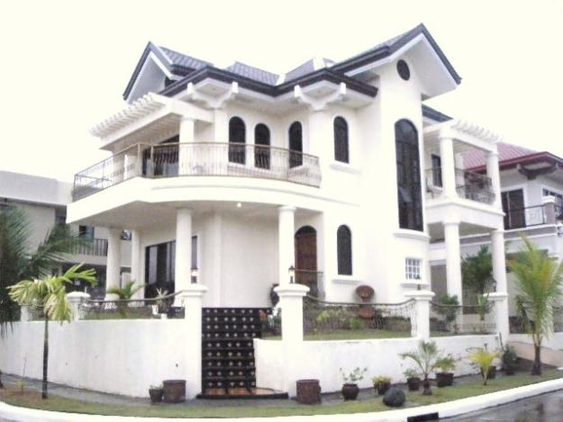

|  A-Frame Home Plans |
Tucked into a lakeside, sheltered by towering trees, or clinging to mountainous terrain, A-frame homes are arguably the ubiquitous style for rustic vacation homes. They come by their moniker naturally; the gable roof extends down the sides of the home, practically to ground level. The A-frame's look is eye-catching, yet extremely practical: The steep roof pitch helps to shed heavy snows. Finished with a metal roof, as is common in Montana, the snow melts quickly and slides off, taking the load off of the roof. Oh, so practical, but let's face it: The A-frame style endures because of its ties to our past, and its unflagging promise to keep us safe and cozy after a long day of cross-country skiing or snowshoeing.
Features
Gable roof extending nearly to ground level
Gable end frequently features a wall of windows Floor plans often include a loft |